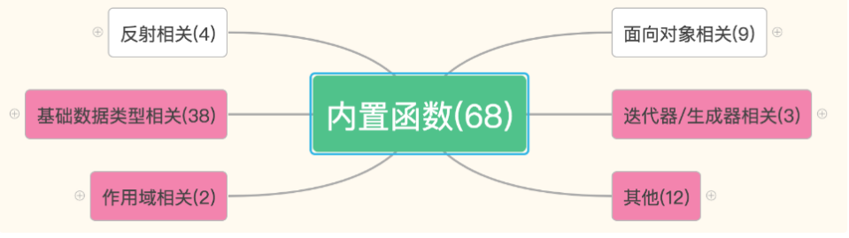
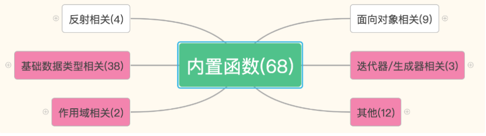
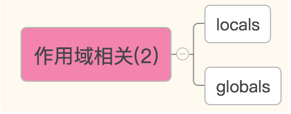
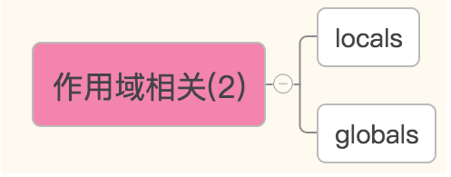
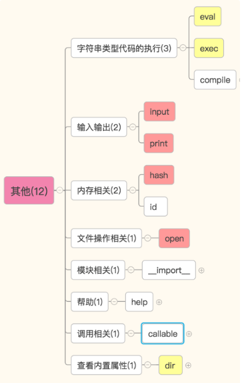
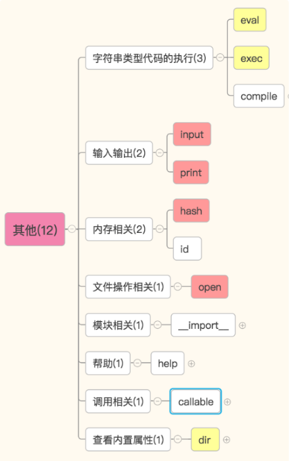
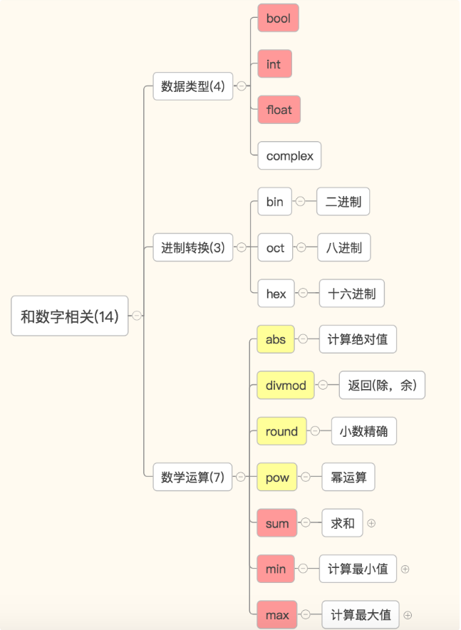
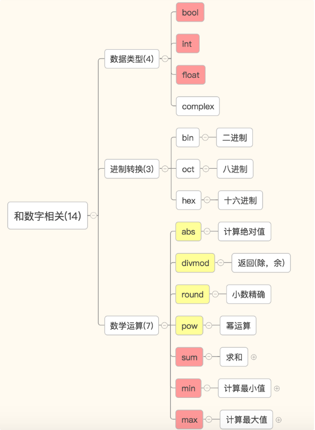
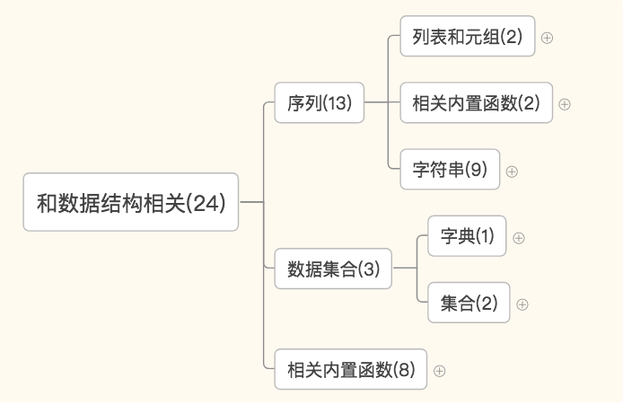
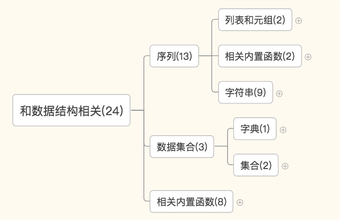

内置函数
楔子
在讲新知识之前，我们先来复习复习函数的基础知识。
问：函数怎么调用？
函数名()
如果你们这么说。。。那你们就对了！好了记住这个事儿别给忘记了，咱们继续谈下一话题。。。
来你们在自己的环境里打印一下自己的名字。
你们是怎么打的呀？
是不是 print('xxx')，好了，现在你们结合我刚刚说的函数的调用方法，你有没有什么发现？
我们就猜，print 有没有可能是一个函数？
但是没有人实现它啊。。。它怎么就能用了呢？
早在我们“初识函数”的时候是不是就是用 len()引出的？
那现在我们也知道 len()也是一个函数，也没人实现，它好像就自己能用了。。。
之前老师给你讲你可以这样用你就用了，那你有没有想过像这样直接拿来就能用的函数到底有多少？
内置函数
接下来，我们就一起来看看 python 里的内置函数。截止到 python 版本 3.6.2，现在 python 一共为我们提供了 68 个内置函数 。它们就是 python 提供给你直接可以拿来使用的所有函数。这些函数有些我们已经用过了，有些我们还没用到过，还有一些是被封印了，必须等我们学了新知识才能解开封印的。那今天我们就一起来认识一下 python 的内置函数。这么多函数，我们该从何学起呢？
上面就是内置函数的表，68 个函数都在这儿了。这个表的顺序是按照首字母的排列顺序来的，你会发现都混乱的堆在一起。比如，oct 和 bin 和 hex 都是做进制换算的，但是却被写在了三个地方。。。这样非常不利于大家归纳和学习。那我把这些函数分成了 6 大类。你看下面这张图，你猜咱们今天会学哪几大类呀？
 

我猜你们都猜对了。我们今天就要学习用粉红色标注出来的这四大块——56 个方法。还有 12 个方法欠着怎么办呢？我们讲完面向对象这剩下的 12 个会在两周之内陆续还给你们的，我保证(认真脸)。那这样，我们今天就主要关注我们要学习的这 56 个方法。
那要学的一共 4 块，咱们从哪儿开始学起呢？
作用域相关
 

基于字典的形式获取局部变量和全局变量
globals()——获取全局变量的字典
locals()——获取执行本方法所在命名空间内的局部变量的字典
其他
 

字符串类型代码的执行
https://www.cnblogs.com/Dominic-Ji/articles/11171313.html
输入输出相关：
input() 输入
print() 输出
def print(self, *args, sep=' ', end='\n', file=None): # known special case of print
"""
print(value, ..., sep=' ', end='\n', file=sys.stdout, flush=False)
file: 默认是输出到屏幕，如果设置为文件句柄，输出到文件
sep: 打印多个值之间的分隔符，默认为空格
end: 每一次打印的结尾，默认为换行符
flush: 立即把内容输出到流文件，不作缓存
"""
import time
for i in range(0,101,2):
time.sleep(0.1)
char_num = i//2 #打印多少个'*'
per_str = '\r%s%% : %s\n' % (i, '*' * char_num) if i == 100 else '\r%s%% : %s'%(i,'*'*char_num)
print(per_str,end='', flush=True)
#小越越 ： \r 可以把光标移动到行首但不换行
数据类型相关：
type(o) 返回变量 o 的数据类型
内存相关：
id(o) o 是参数，返回一个变量的内存地址
hash(o) o 是参数，返回一个可 hash 变量的哈希值，不可 hash 的变量被 hash 之后会报错。
t = (1,2,3)
l = [1,2,3]
print(hash(t)) #可hash
print(hash(l)) #会报错
'''
结果：
TypeError: unhashable type: 'list'
'''
hash 函数会根据一个内部的算法对当前可 hash 变量进行处理，返回一个 int 数字。
*每一次执行程序，内容相同的变量 hash 值在这一次执行过程中不会发生改变。
文件操作相关
open() 打开一个文件，返回一个文件操作符(文件句柄)
操作文件的模式有 r,w,a,r+,w+,a+ 共 6 种，每一种方式都可以用二进制的形式操作(rb,wb,ab,rb+,wb+,ab+)
可以用 encoding 指定编码.
模块操作相关
__import__导入一个模块
帮助方法
在控制台执行 help()进入帮助模式。可以随意输入变量或者变量的类型。输入 q 退出
或者直接执行 help(o)，o 是参数，查看和变量 o 有关的操作。。。
和调用相关
callable(o)，o 是参数，看这个变量是不是可调用。
如果 o 是一个函数名，就会返回 True
查看参数所属类型的所有内置方法
dir() 默认查看全局空间内的属性，也接受一个参数，查看这个参数内的方法或变量
和数字相关
 

数字——数据类型相关：bool，int，float，complex
数字——进制转换相关：bin，oct，hex
数字——数学运算：abs，divmod，min，max，sum，round，pow
和数据结构相关
 

序列——列表和元组相关的：list 和 tuple
序列——字符串相关的：str，format，bytes，bytearry，memoryview，ord，chr，ascii，repr
ret = bytearray('alex',encoding='utf-8')
print(id(ret))
print(ret[0])
ret[0] = 65
print(ret)
print(id(ret))
ret = memoryview(bytes('你好',encoding='utf-8'))
print(len(ret))
print(bytes(ret[:3]).decode('utf-8'))
print(bytes(ret[3:]).decode('utf-8'))
序列：reversed，slice
l = (1,2,23,213,5612,342,43)
print(l)
print(list(reversed(l)))
l = (1,2,23,213,5612,342,43)
sli = slice(1,5,2)
print(l[sli])
数据集合——字典和集合：dict，set，frozenset
数据集合：len，sorted，enumerate，all，any，zip，filter，map
filter 和 map：https://www.cnblogs.com/Dominic-Ji/articles/11171330.html
sorted 方法：https://www.cnblogs.com/Dominic-Ji/articles/11171337.html
创建日期: 2022-04-01